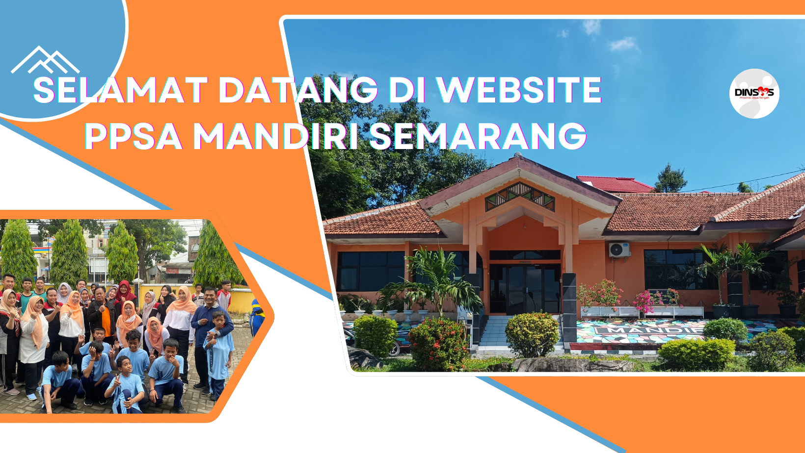
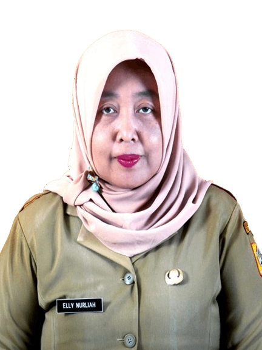
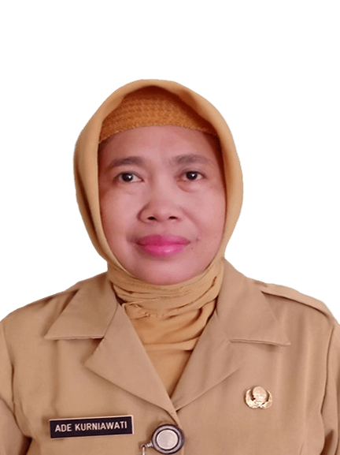
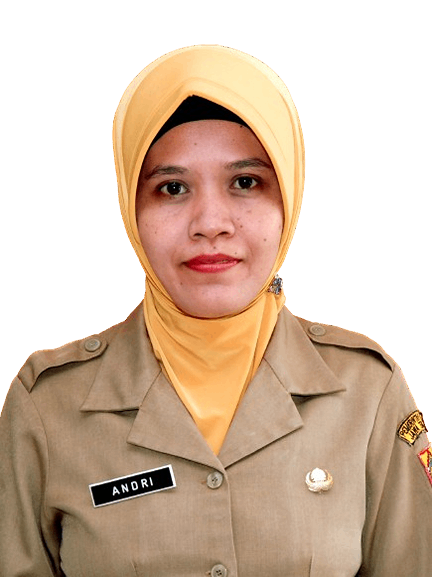
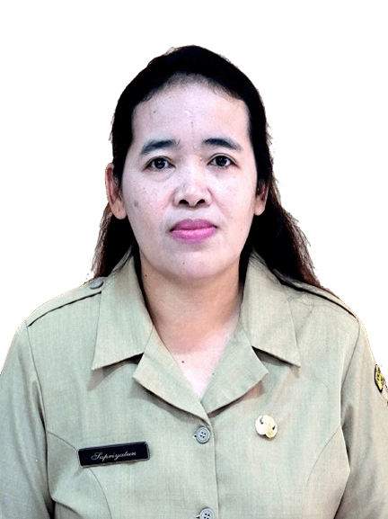
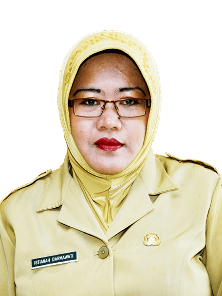
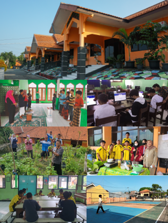

PPSA Mandiri
Fasilitas
Sejarah
Staff






Tentang
PPSA Mandiri
Semarang
Adalah Panti Pelayanan Sosial Anak Mandiri yang merupakan Unit Pelaksana Teknis (UPT) Dinas Sosial Provinsi Jawa Tengah yang bertugas untuk memberikan, bimbingan dan hak perlindungan kepada anak asuh usia sekolah dengan status yatim, piatu, yatim piatu atau keluarga yang tidak mampu agar kelak memiliki kehidupan yang layak dan bermartabat serta berguna untuk nusa dan bangsa.
Explore

Kegiatan
Kegiatan
Panti Pelayanan Sosial Anak Mandiri
Fasilitas Pendidikan :
Menyekolahkan anak dengan sistem anak sekolah di luar dan tinggal di asrama/wisma
pada jenjang pendidikan :
Sekolah Dasar (SD)
Sekolah Menengah Pertama (SMP)
Sekolah Menengah Kejuruan (SMK)
Pusat Kegiatan Belajar Masyarakat (PKBM)
Bimbingan Fisik, Sosial, Mental dan Spiritual :
Bimbingan pola hidup sehat
Kegiatan keagamaan
Pembinaan kedisiplinan
Olahraga
Aktivitas luar panti wisata/outbond
Bermain musik
Pelatihan Keterampilan :
Keterampilan las
Keterampilan otomotif roda dua
Keterampilan menjahit
Budidaya jamur tiram, ternak ayam, budidaya ikan
Fasilitas
yang ada di panti
Luas tanah 10.000m2 dengan bangunan terdiri dari :
Kantor
Aula
Ruang kelas, ruang rapat
Asrama
Rumah dinas
Mushola
Lapangan olahraga
Sejarah
Panti
1986-2001
Unit Pelaksana Teknis Kanwil Departemen Sosial RI dengan nama Panti Sosial Pamardi Putra Mandiri.
2002
Unit Pelaksana Teknis dinas sosial Provinsi Jawa Tengah.
2008
Perda no 6 tahun 2008 panti sosial putra mandiri.
2010
Pergub nomor 111 tahun 2010 Balai Rehabilitasi Sosial “Mandiri” Semarang II.
2013
Pergub no 53 Tahun 2013 Balai Rehabilitasi Sosial Eks Korban Penyalahguna NAPZA “Mandiri” Semarang.
2016
Pergub no 109 tahun 2016 berubah menjadi Panti Pelayanan Sosial Anak Mandiri berlaku sampai sekarang.
Staff
Panti
Selamat datang di halaman pengenalan staff kami di Panti Pelayanan Sosial Anak Mandiri Semarang. Kami memiliki tim yang berdedikasi untuk memberikan pelayanan terbaik kepada penghuni dan masyarakat sekitar. Berikut adalah profil singkat dari anggota staff kami:
Bu Elly Nurliah
Ka. Sub Bagian Tata UsahaSunarto
Pekerja Sosial AhliDra. Ade Kurniawati
Pekerja Sosial AhliR.A.Ardhini Waskita
Pekerja Sosial Ahli PertamaSumaryono
Pengadministrasi UmumSuratini
Bendahara Pengeluaran PembantuMujiyanto
Pembantu Pengurus BarangSuhardi
Pramu TamanIrsat (Non ASN)
Pengadministrasi UmumCatur Wulan Widodo (Non ASN)
Pengadministrasi Umum
Muh. Rofiq (Non ASN)
Pengadministrasi UmumTri Supiani
Pengadministrasi KepegawaianSusanto
Staf Sub Bagian Tata UsahaGhea Maurizka (Non ASN)
Pengadministrasi UmumEufrosina Cesarita
Pengadministrasi UmumAndri Redjeki (Non ASN)
Pranata KomputerArief Setyo Aji (Non ASN)
Pengadministrasi BarangSupriyatun
Pranata JamuanIstianah Darmawati (Non ASN)
Pengawai
Tentang
Kami
Visi
Terwujudnya penyelenggara kesejahteraan sosial yang profesional dan berkelanjutan.
Tujuan
Memulihkan harga diri, tanggung jawab sosial,kemauan dan kemampuan anak agar dapat melaksanakan fungsi sosialnya
Fasilitas Pelayanan Panti
Selama berada di panti penerima manfaat mendapat pemenuhan kebutuhan dasar sandang, papan, pangan, kesehatan
Misi
1. Meningkatkan jangkauan kualitas dan profesionalisme dalam penyelenggaraan pelayanan kesejahteraan sosial anak terlantar
2. Mengembangkan dan memperkuat sistem kelembagaan yang mendukung penyelenggaraan pelayanan kesejahteraan sosial terhadap anak terlantar
3. Meningkatkan kerjasama lintas sektoral dalam penyelenggaraan pelayanan kesejahteraan sosial terhadap anak terlantar
4. Meningkatkan harkat dan martabat serta kualitas hidup anak terlantar
5. Meningkatkan peran serta masyarakat dalam penyelenggaraan usaha kesejahteraan sosial
Kriteria Persyaratan Pendaftaran
Anak laki laki usia 7 – 18 th
Anak terlantar, yatim, piatu dan yatim piatu
Tidak memiliki gangguan jiwa
Tidak memiliki cacat fisik atau penyakit kronis yang mengganggu dalam mengikuti program bimbingan & rehabilitasi
Calon Penerima Manfaat diantar orang tua / wali
Apabila yg mengantar dari instansi , wajib membawa surat pengantar resmi dari instansi yang mengirim
Persyaratan Administrasi
1. Surat permohonan orang tua/wali untuk memasukkan anak menjadi anak asuh panti
2. Fotocopy akte kelahiran/surat keterangan kelahiran
3. Fotocopy KTP orang tua/wali anak
4. Fotocopy KK orangtua/wali anak
5. Kartu Jaminan Kesehatan Nasional
6. Surat keterangan sehat jasmani rohani dari dokter
7. Mengisi surat pernyataan orang tua /wali sanggup mentaati tata tertib panti
8. Membawa ijazah rapot pendidikan terakhir dan surat keterangan pindah sekolah
9. Pas foto ukuran 4x6 sebanyak 4 lembar
10 Memenuhi standar seleksi dan hasil wawancara dengan petugas pekerja sosial